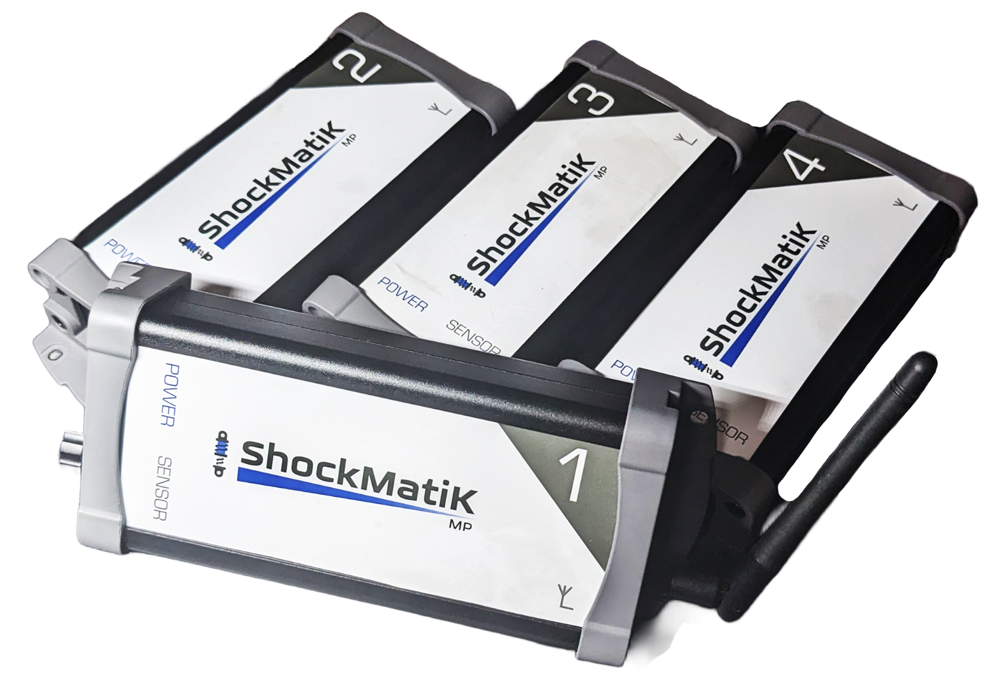
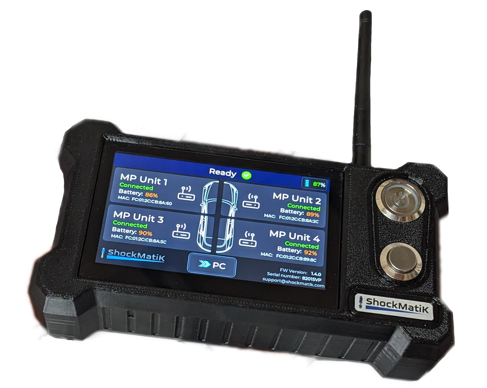
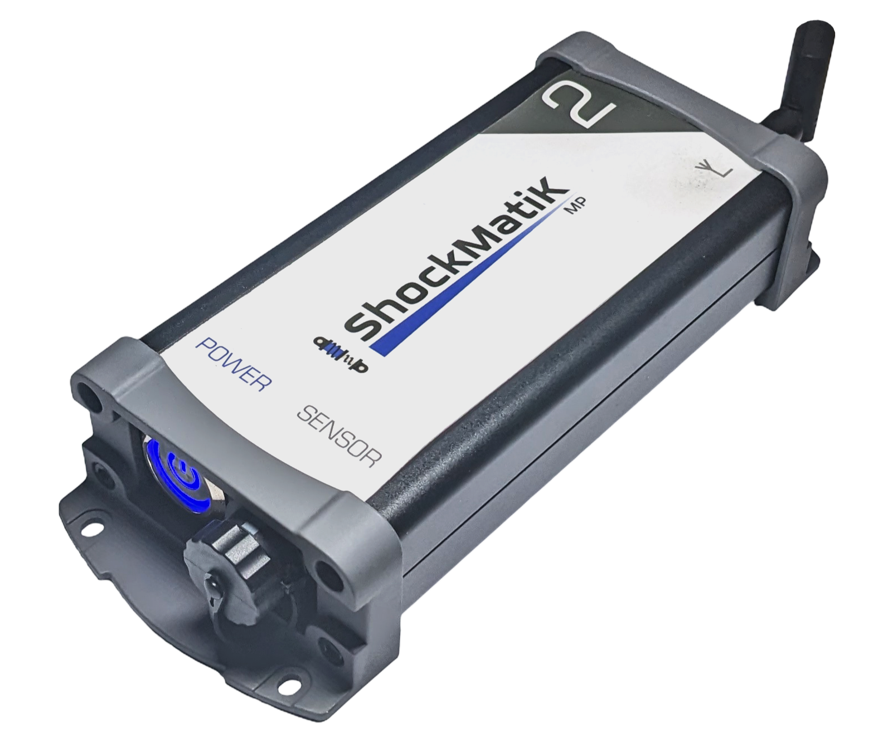
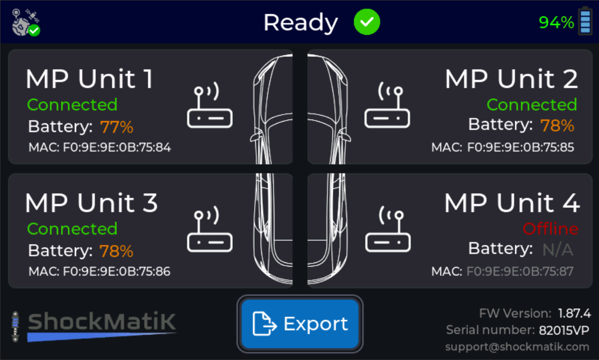
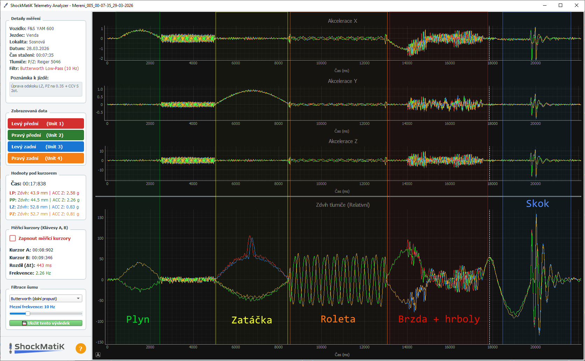
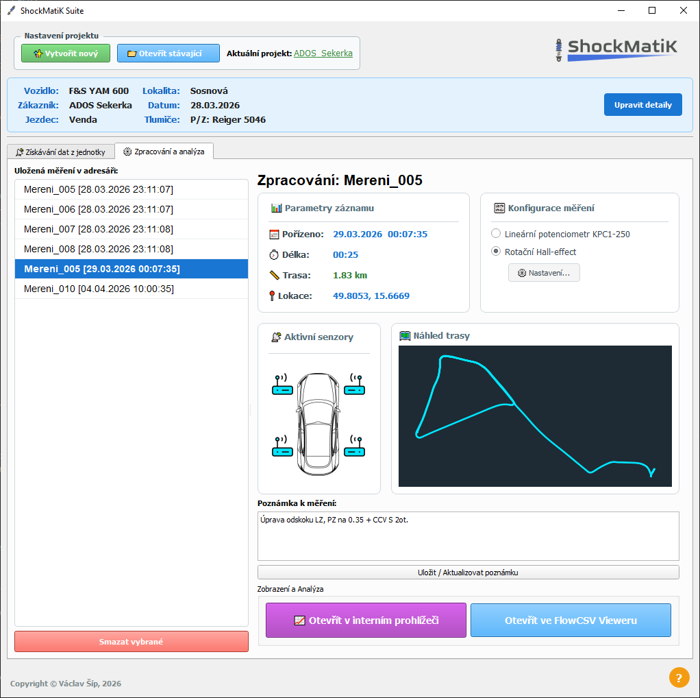

Komplexní měřicí systém pro precizní analýzu a ladění sportovních podvozků.
Hardware: Z trati přímo do PC
Souprava zařízení pro záznam telemetrických dat.
4x Měřicí jednotka
Pomocí lineárních snímačů, připevněných paralelně k tlumičům, zaznamenávají jejich zdvih v čase a díky vestavěným akcelerometrům také snímají zrychlení odpružené hmoty ve třech osách.
Centrální řídicí jednotka
Bezdrátově řídí a synchronizuje všechny měřicí jednotky. Nasbíraná data následně přenese do počítače pomocí USB nebo bezdrátově přes Wi-Fi.




Software: ShockMatiK Suite
Sada nástrojů pro zpracování a analýzu telemetrických dat.
Project manager
Desktopová aplikace pro Windows, která slouží ke stažení a organizaci naměřených dat z hardwarové jednotky. Umožňuje efektivní třídění dat do projektů a ukládání doplňujicích detailů k jednotlivým měřením.
Telemetry Analyzer
Integrovaný analytický nástroj pro intuitivní vizualizaci dat a jejich vyhodnocení. Disponuje měřícími kurzory s automatickým výpočtem frekvence kmitání odpružené i neodpružené hmoty a pokročilými matematickými metodami pro eliminaci nepodstatných vibrací.

